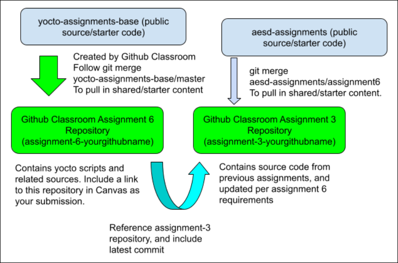

Please find the link to create your repository for this assignment in the "GitHub Repo Creation Links" section under course resources. You may find course resources on the left side pane of your module view.
This link will create a new repository with default content which needs to be based on https://github.com/cu-ecen-aeld/yocto-assignments-base/ (external link; opens in a new tab) which you will modify to support building your aesdsocket utility from your existing assignment 3 repository.

Your assignment 6 repo needs to be initialized with the yocto-assignments-base repository containing yocto starter code (external link; opens in a new tab). You will use the assignment 6 repository for your Yocto implementation and reference your assignment 3 repository for the content of your yocto image. Your assignment 6 repository will contain yocto scripts and related source assignments-bases.
Note: The following links are external and will open in a new tab.
Don’t follow the instructions on the associated assignment 6 github page to add a README commit. To setup your assignment 6 repo, instead use these commands:
git remote add yocto-assignments-base https://github.com/cu-ecen-aeld/yocto-assignments-base.git
This specifies the base repository at https://github.com/cu-ecen-aeld/yocto-assignments-base.git with example starter code
git fetch yocto-assignments-base
git merge yocto-assignments-base/master
This command makes your master branch match the master branch of yocto-assignments-base
git submodule update --init --recursive
This command clones the assignment-autotest submodule and nested git repositories.
Associated lecture videos
Yocto documentation, including:
https://docs.yoctoproject.org/brief-yoctoprojectqs/index.html
https://docs.yoctoproject.org/dev-manual/layers.html#understanding-and-creating-layers
https://docs.yoctoproject.org/sdk-manual/extensible.html#a-closer-look-at-devtool-add
featureshttps://wiki.yoctoproject.org/wiki/Building_your_own_recipes_from_first_principles#The_bbexample_recipe
Mastering Embedded Linux Programming Chapter 6
Note: The following links are external and will open in a new tab.
For this and later yocto assignments you need to setup your SSH key as a repository secret.
Install essential build packages on your build host as described in the “Build Host Packages” section of the yocto quick start guide.
Add yocto poky as a git submodule in the root of your project repository.
Use https://git.yoctoproject.org/poky as the source (see the clone reference at https://git.yoctoproject.org/poky/)
Be sure to git add from the root of your project repository and git commit to save the appropriate commit hash for the buildroot directory before running ./build.sh
Use the branch kirkstone
Update the recipe “aesd-assignments” in the meta-aesd/recipes-aesd folder of your project as discussed in class. This recipe should build your assignment 6 aesdsocket source using the git repository with appropriate commit specified via SRCREV and install associated files in the rootfs of the system.
Remember to add your start script as well using the instructions discussed in lecture videos.
Add your package to core-image-aesd as described in lecture videos.
Use the build.sh script to build your combined image
Use the runqemu.sh script in the root folder which:
Runs source oe-init-build-env from the poky directory to setup your yocto build environment.
Uses runqemu nographic plus appropriate arguments to start QEMU with host port 9000 forwarded to your QEMU instance using slirp.
If not already present, add ssh support to your image using CORE_IMAGE_EXTRA_INSTALL += " openssh" in your core-image-aesd.bb file.
Verify your socket is started automatically when starting qemu on the target. Verify your socket test scripts used for part 1 of your assignment work as expected when running against the qemu target, as they did with the assignment 5 buildroot implementation.
The `./full-test.sh` script in your yocto repository should now complete successfully. Ensure you have installed sshpass with `sudo apt-get update && sudo apt-get install -y sshpass` as this is required for the test script.
Tag the assignment with “assignment-<assignment number>-complete” once the final commit is pushed onto the respective repositories. The instructions to add a tag can be found here
You should be able to clone your final yocto assignment repository to a new directory, run ./build.sh to build the system image and ./runqemu.sh to start the image.
When the QEMU image is started, it should pass port 9000 from the host into the guest image, the aesdsocket utility should be running in daemon mode, and all functionality should match the implementation section.
When the QEMU image is shutdown gracefully and restarted, the data returned over the connection (and content of /var/tmp/aesdsocketdata) should not contain content from a previous run (the shutdown script should have gracefully terminated the process during normal shutdown).
The sockettest.sh script should pass when run against your running qemu image.
When the QEMU image is started, it should pass port 9000 from the host into the guest image, the aesdsocket utility should be running in daemon mode, and all functionality should match the implementation section.
The `./full-test.sh` script executed from your yocto repository should complete with success.
Your assignment submission repository should contain the yocto setup used to generate and run the qemu image described above.
Your yocto submission repository should reference your aesd-assignments repository, which will contain the assignment content referenced above.
Troubleshooting:
You see an error about content mismatch on timestamp comparisons, with "Binary Files Differ" included in the output.
This means the logic we have here to remove timestamps from the output file is failing, because the socket output file is being treated as a binary file instead of a text file (external link; opens in a new tab). The reason the output file is treated as a binary file is typically because there are non-printable ASCII characters in the file. There may be non printable ASCII characters in the file for a variety of reason but the most common is probably exceeding array bounds on strings which are missing null termination characters. Look at the output file with a hex editor, find where the binary content is included, and fix your code to ensure you aren't writing anything other than the ASCII string content sent over the socket into your socket file.
Use the cleanall task in bitbake (documentation here (external link; opens in a new tab)) to recover from failures of recipe builds. This will help you clean build a specific recipe. Use this method when a recipe fails for reasons which aren't easy to understand. For instance, sometimes recipes fail to build if your build machine crashed when building due to out of disk space or out of memory conditions. Search the error log for the recipe name (usually in the format recipename_x.x where x.x is the version.
The cleanall task in BitBake is responsible for cleaning up the build artifacts and temporary files associated with a recipe.
When you run bitbake -c cleanall <recipe> it triggers the clean process for the specified recipe.
Logs for troubleshooting: In case of debugging inside qemu, find the logs at "/var/log/messages"
Note: The following links are external and will open in a new tab. Reducing Disk Usage:
If you find yourself out of disk space when building your yocto image, and are unable to free space by deleting content from previous assignments, here are some strategies you can try:
Delete the build/tmp directory to clear out old build content. The shared state cache will allow you to rebuild this content quickly.
Add INHERIT += "rm_work" in your build.conf as referenced here, either by manually editing the build/conf/local.conf file or editing the build script to add this to the file.
Note that this means some files which are potentially useful for troubleshooting builds are missing, especially your local rootfs content in the build/tmp/work directory. Use RM_WORK_EXCLUDE for specific recipes, if needed for troubleshooting, as described here. Adding the image recipe, core-image-aesd, to your RM_WORK_EXCLUDE will mean your work directory contains rootfs content.